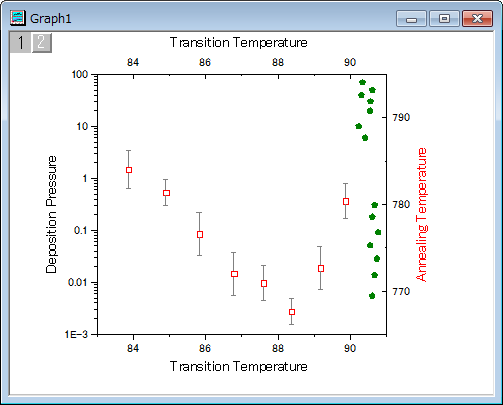
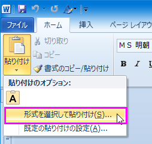
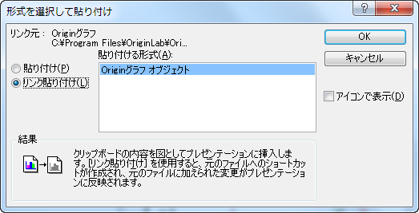
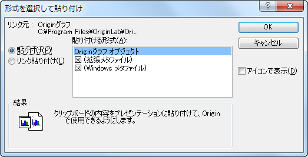
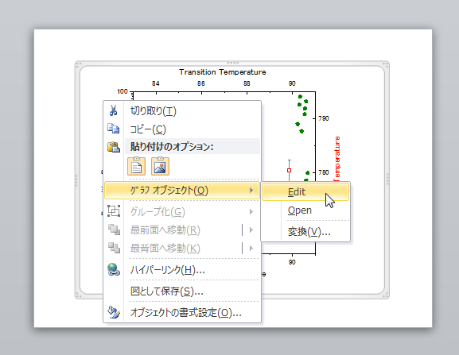
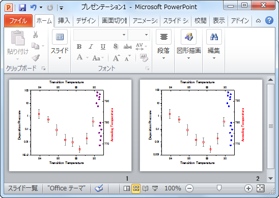

他のアプリケーションでのグラフの貼り付け
Paste-Embed-Graph-OtherApp
サマリー
Originのグラフをリンクや埋め込みとして他のアプリケーション（例えば、Microsoft® PowerPoint/Excel/Wordなど）に挿入できます。リンクでも埋め込みでも、後からOriginでグラフの編集が可能です。
これらの違いとしては埋め込みグラフは目的ファイルを含んでいますが、リンクのグラフにはありません。リンクのグラフは元のグラフが更新されると大きく変更する事があります。
学習する項目
このチュートリアルでは、以下の項目について説明します。
- グラフをWordにリンクしたグラフとしてコピー＆ペーストするには
- グラフをWordに埋め込みグラフとしてコピー＆ペーストするには
- リンク/埋め込みグラフを挿入後に編集するには
ステップ
- Originを開き、OffsetY.opj を<Originプログラムフォルダ>/Samples\Graphing\から開きます。このプロジェクトはグラフ（Graph1）を含みます。

- グラフウィンドウをアクティブにし、編集：ページコピーを選択します。
 |
別のメニューオプション 画像としてグラフをコピーする も利用可能です。Wordや他のアプリケーションにグラフを挿入するには、これを選択します。この方法では、Originでグラフを再度編集することは出来ません。 |
- Microsoft® Word(ここではWord 2010を使っています)で白紙のページを作ります。ホーム タブで、貼り付けの下にある形式を選択して貼り付け
を選択します。

- 形式を選択して貼り付けダイアログでリンク貼り付けのラジオボタンを選択し、Originグラフオブジェクトを貼り付ける形式リストから選びます。OKをクリックしてダイアログを閉じます。

リンクしたオブジェクトとして、現在の位置にグラフが挿入されます。
- 前野ステップと同様に、形式を選択して貼り付けダイアログを開きます。
- 今回は貼り付けラジオボタンを選択してOriginグラフオブジェクトを貼り付ける形式リストから選びます。OKをクリックしてダイアログを閉じます。埋め込みオブジェクトとして、グラフが再度貼り付けられます。

- Originに戻り、OffsetY.opjファイルを選択します。Graph1のオリーブ色の散布図をダブルクリックして作図の詳細ダイアログを開きます。シンボルの色を紫に変更し、OKをクリックしてダイアログを閉じます。
- 先程作成したWordファイルに戻り、（リンクした）最初のグラフの上で右クリックし、フライアウトメニューでリンクの更新を選びます。散布図の色が紫に変わります。
- 2番目のグラフ（埋め込みのもの）の上で右クリックし、 グラフオブジェクト：編集 を選択して、グラフをOriginで再度開きます。現在グラフ名はGraph
in Document1です。このグラフは目的のファイルに含まれていることを示します。

- Graph in Document1中では、前と同じように、オリーブ色だったプロットがブルーニ変更されています。Note:リンクしたグラフは埋め込みのグラフを見た目が違います。
